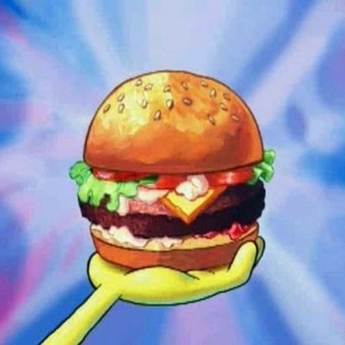

The Greatest: Krabby Patty

The fame of Mr.Krabs legacy, the envy of Plankton. Kept top secret, until now that is,
the Krabby patty!
Prepare your palletes for the tastiest sandwich
in the sea.
Ingredients
Burger patties
- 1/3 lb ground beef
- 2 tsp Old Bay seasoning
- 1 tsp Black pepper
- 1 tsp Sea salt
- 4 slices chedder cheese
King Neptune's Poseidon Powder Aioli
- 1/2 mayo
- 1 tsp. Old Bay seasoning
Method
- Make burger patties: Heat a pan over medium heat.
Combine ground beef, Old Bay, pepper and salt and form 4 patties.
Cook both
sides for 4-5 minutes.
- In the last 30 seconds of cooking place cheese (on patties), to melt.
- Stir King Neptune's Poseidon Powder Aioli and Old Bay until combined.
- Assemble the sandwich: Spread Ailoi on each bun, followed by
burger patty, ketchup, mustard, pickles, onion slices, tomato, lettuce.